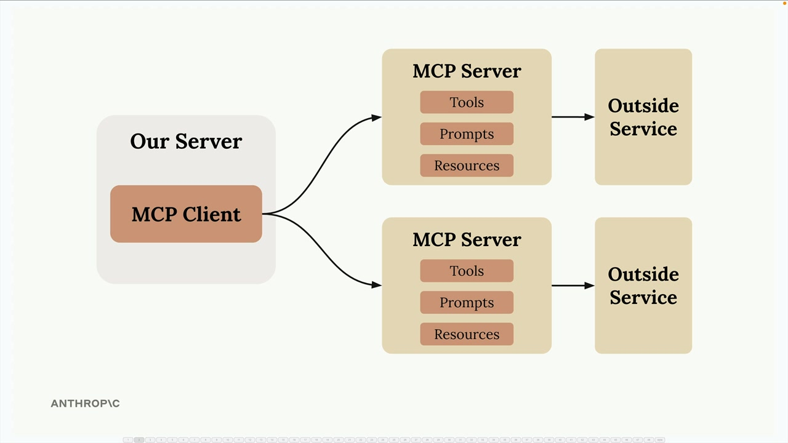
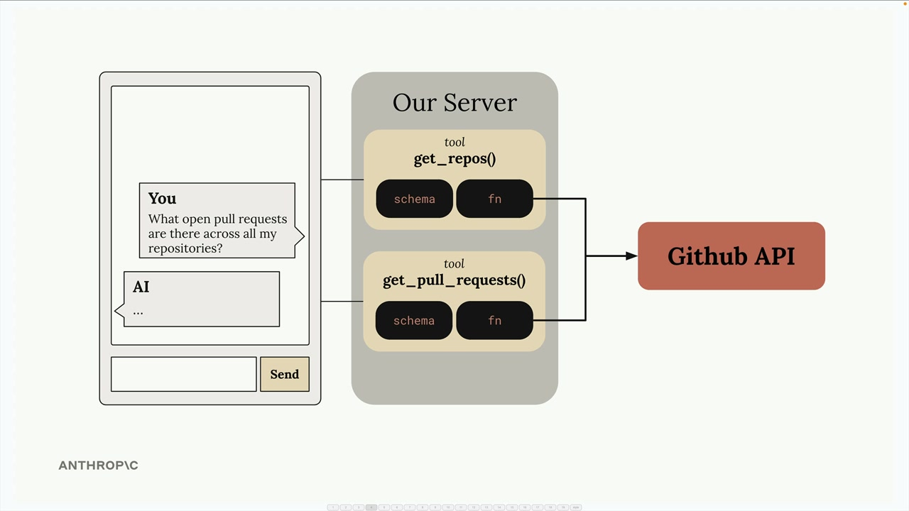
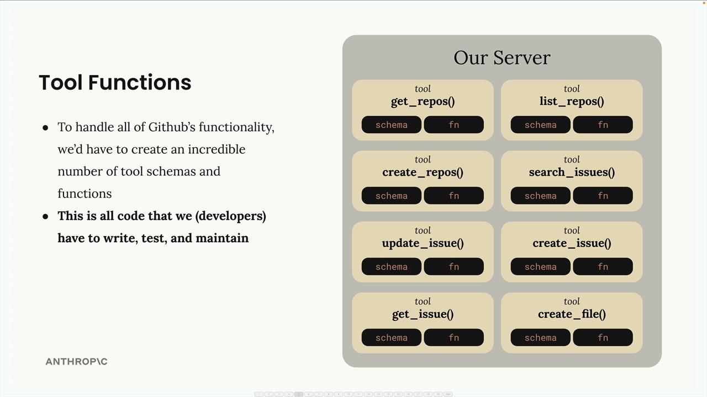
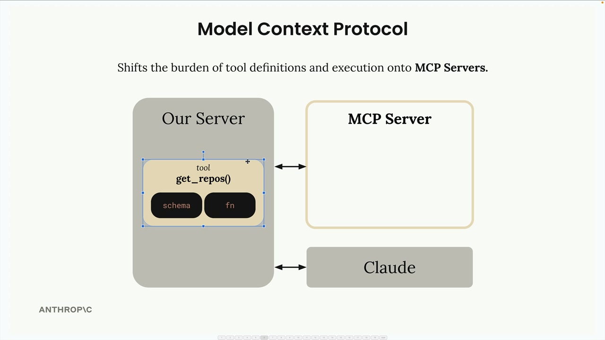
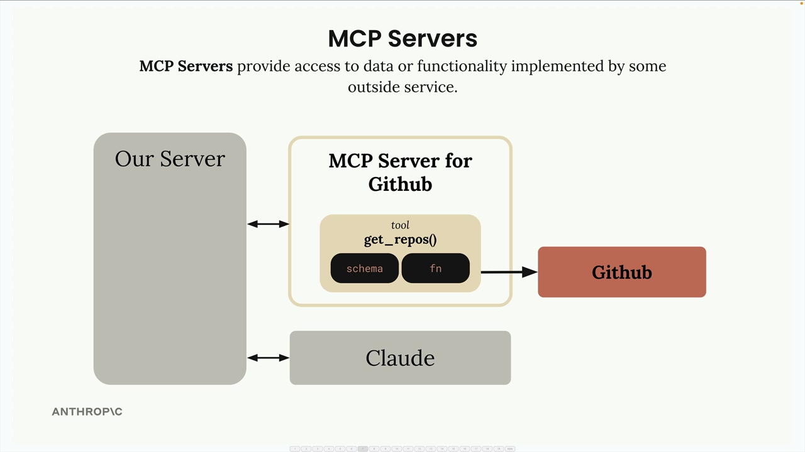
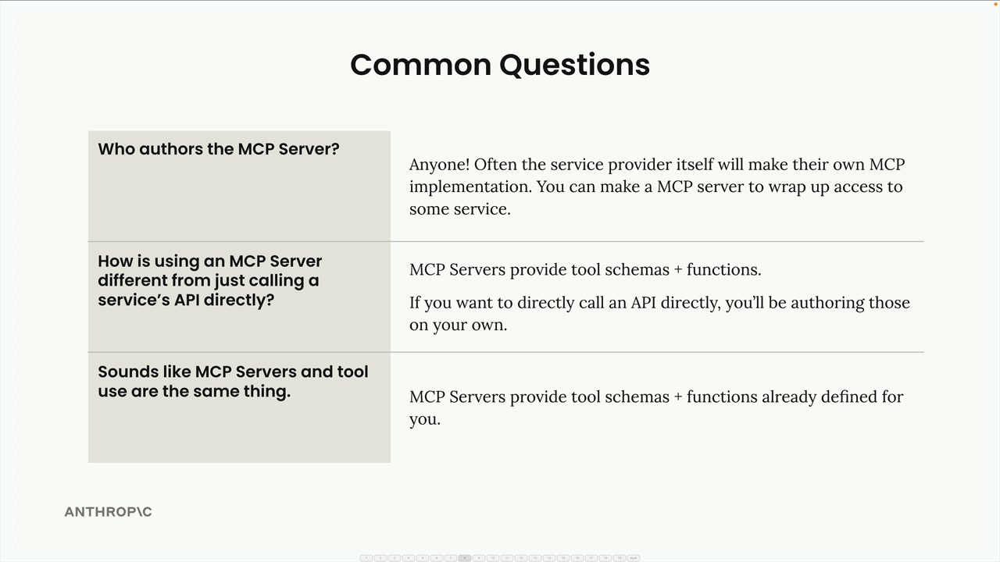

Введение в MCP
Чему научитесь
Видео 4:40 и текст урока
К концу урока вы сможете:
- объяснить, что такое Model Context Protocol и какую проблему он решает;
- описать архитектуру: MCP-клиент и MCP-серверы;
- ответить на частые вопросы: кто пишет серверы, чем MCP отличается от вызова API и от tool use.
Видео и текст урока.
Смотреть урок на Skilljar Introducing MCP · 4:40Model Context Protocol (MCP) — коммуникационный слой, который даёт Claude контекст и инструменты, избавляя вас от написания массы рутинного интеграционного кода. Можно думать о нём как о способе переложить описание и выполнение инструментов с вашего сервера на специализированные MCP-серверы.

Впервые встречаясь с MCP, вы увидите схемы базовой архитектуры: MCP-клиент (ваш сервер) подключается к MCP-серверам, которые содержат инструменты (tools), промпты (prompts) и ресурсы (resources). Каждый MCP-сервер — интерфейс к какому-то внешнему сервису.
MCP на реальном примере
Допустим, вы делаете чат, в котором пользователи спрашивают Claude о своих данных на GitHub. Пользователь может спросить: «What open pull requests are there across all my repositories?» Чтобы ответить, Claude нужны инструменты для доступа к API GitHub.

get_repos и get_pull_requests, у каждого схема и функция, обращающаяся к API GitHub.Без MCP все инструменты интеграции с GitHub пришлось бы писать самим: схемы и функции для каждой возможности GitHub, которую вы хотите поддержать.
Проблема функций-инструментов
У GitHub огромная функциональность: репозитории, pull request’ы, issues, проекты и многое другое. Чтобы сделать полноценный чат-бот для GitHub, пришлось бы написать невероятное количество инструментов:

get_repos, search_issues, create_file…), и у каждого — схема и функция.Каждому инструменту нужны и описание схемы, и реализация функции. Это много кода, который вам как разработчику нужно написать, протестировать и поддерживать.
Как MCP решает проблему
MCP перекладывает описание и выполнение инструментов с вашего сервера на MCP-серверы. Вместо того чтобы писать все инструменты GitHub самим, вы используете инструменты, которые написаны и выполняются внутри специального MCP-сервера.

get_repos (схема и функция) пока на вашем сервере, MCP-сервер пуст.MCP-сервер — обёртка вокруг функциональности GitHub: он даёт готовые инструменты, которые можно использовать, не реализуя их самим.

get_repos живёт в MCP-сервере: схема и функция там, а ваш сервер лишь связывает Claude и MCP-сервер.MCP-серверы дают доступ к данным или функциональности внешних сервисов. Они упаковывают сложные интеграции в переиспользуемые компоненты, к которым может подключиться любое приложение.
Частые вопросы о MCP

Кто пишет MCP-серверы?
Реализовать MCP-сервер может кто угодно. Часто сами поставщики сервисов делают официальные MCP-серверы. Например, AWS может выпустить официальный MCP-сервер с инструментами для своих сервисов.
Чем MCP отличается от прямых вызовов API?
MCP-серверы дают уже готовые схемы и функции инструментов. Если вы вызываете API напрямую, описывать инструменты для Claude приходится самим. MCP избавляет от этой работы.
Разве MCP — это не просто tool use?
Это частое заблуждение. MCP-серверы и tool use дополняют друг друга, но это разные понятия. MCP отвечает на вопрос, кто создаёт и поддерживает инструменты. С MCP функции и схемы инструментов уже кто-то написал за вас и упаковал в MCP-сервер.
Ключевая мысль: MCP-серверы дают готовые схемы и функции инструментов, избавляя от необходимости строить и поддерживать сложные интеграции самим.
Дальше
Следующий урок — MCP-клиент: как он общается с сервером и какими сообщениями.
Оригинал урока: Introducing MCP.